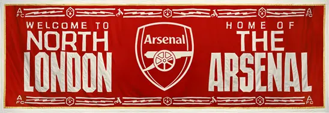
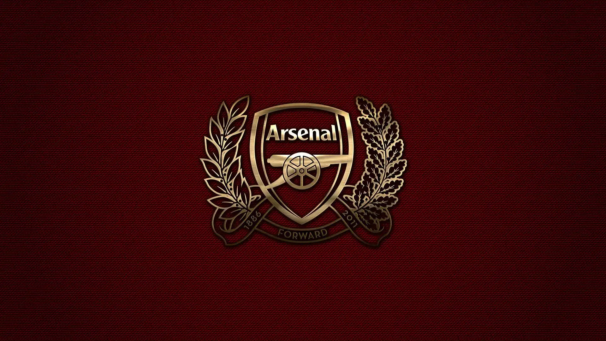

Welcome to Arsenal Fan Page!


Why Arsenal Fan Page
Arsenal Football Club, founded in 1886, has grown from a small team in South London to one of the most iconic and successful clubs in English football. Known for its rich history, style of play, and passionate fanbase, Arsenal has won numerous domestic and international trophies, including multiple league titles and FA Cups. From the legendary "Invincibles" season to its long-standing commitment to youth development and beautiful football, the club's legacy is one of resilience and innovation. As a lifelong fan, I was inspired to build this website not just to celebrate Arsenal's achievements, but to create a space where fellow supporters can connect with the club’s vibrant history and look forward to its bright future.